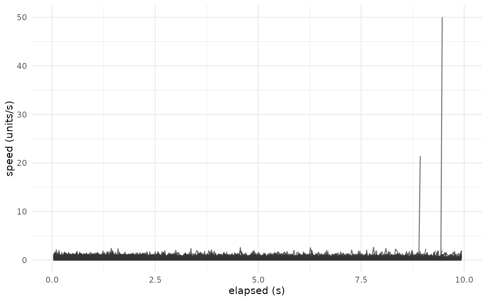

Draws a per-observation kinematics metric against elapsed time, one line per trajectory – the non-circular companion to [radiate()]. `metric = "speed"` plots [instantaneous_speed()]; `metric = "turning"` plots [angular_velocity()].
Details
Speed and turning rate are per-second, so a frame rate is required for frame-indexed time ([set_frame_rate()]); POSIXct time is used directly. With a distance calibration ([set_distance_scale()]) speed is in physical units.
See also
[instantaneous_speed()], [angular_velocity()], [elapsed_seconds()], [radiate()], [set_frame_rate()]
Examples
ts <- set_frame_rate(cpunctatus, 30)
plot_profile(ts, metric = "speed")
